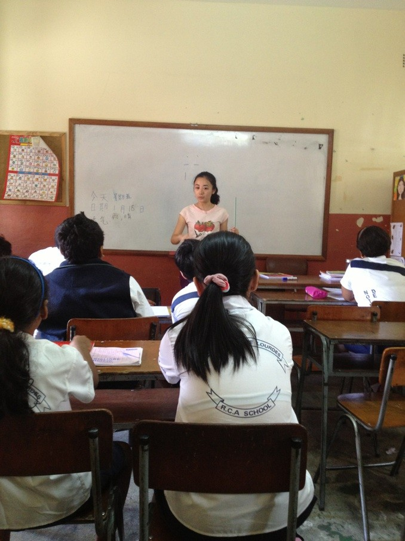

太阳雨的灿烂
桂电志愿者网 日期：2013-05-16 来源：中国青年志愿者网
中国青年志愿者网讯（王耀玥） 在每天炎炎烈日与瓢泼大雨的够筹交错中，来到毛里求斯已经两个月了。初来乍到的新鲜与兴奋感早已在每天的起早贪黑和辛苦教学中消磨殆尽。
几乎每天都过着节奏相同的生活，六点半起床，七点奔往车站，八点半抵达学校，九点开始一天六个年级的教学，没有万一、没有例外。抵达毛里求斯之前，曾想象着诸多生动的教学方法，努力尝试着让孩子们从心理上认为中文很简单易懂，但当理论遭遇实践时才知道最初的计划皆行不通。
语言的不通给教学带来了诸多的不便，孩子们的不安分给课堂也增加了太多的难阻，被那群调皮的孩子们气得头疼是常有的事情。于是每天回家后我们的交流无一例外只是教学只是孩子，相互学习相互讨论，为了履行我们的使命呕心沥血。
两个月来，没有娱乐，没有出游，没有锦衣玉食，甚至连一次奢侈的自然醒也没有，有的只是烈日下的暴晒，狂风中的寸步难行，以及每天在公交车上上演一分钟睡着又被汗水咸醒的小短剧。

两个月来，听着自己教的孩子们中文发音越发准确，看着他们能认识的汉字日益增多，想着每天跨进校门一窝蜂涌来抱你亲你跟你说“老师好”的瞬间，似乎一切的辛苦又烟消云散。
志愿生活还在继续，这仅仅是一年中的六分之一，但我深信，一年后我们十一人，一定会带着黝黑的皮肤，最灿烂的笑容离开这个美丽的国家！
【责任编辑：严家芬】